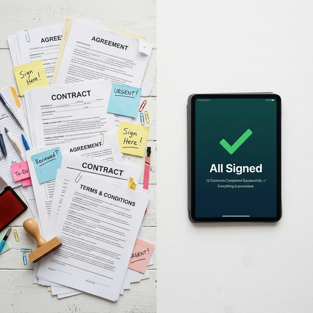

Consulting engagements run on trust — and trust runs on signed agreements. BrillSign gives your firm a frictionless, secure way to get proposals, NDAs, and retainers signed before the client changes their mind.
See exactly what changes when your consulting firm stops chasing signatures and starts closing faster.

Whether your client is in Dubai, London, or a remote village with spotty wifi — BrillSign works on any device, in any browser, with no app download required. A legally-binding signature takes less time than a cup of coffee.
BrillSign handles the full document lifecycle of a consulting engagement — from first contact to final invoice.
Define scope, fees, and deliverables — signed before a single hour is logged.
Protect sensitive strategy, IP, and client data from day zero of the engagement.
Lock in ongoing relationships with clear terms, signed and archived automatically.
Every milestone, deliverable, and acceptance criterion — agreed to in writing.
Formalize sub-contractor and co-consultant relationships with tamper-proof proof.
Assign deliverable ownership and usage rights with legal clarity and cryptographic integrity.
BrillSign signatures meet the legal standards of eIDAS (EU), ESIGN (US), IT Act (India), and equivalents in 190+ jurisdictions. When a client disputes a term, your signature stands up in court — backed by a cryptographic audit trail.
View Legal CoverageEverything you need to know about BrillSign for consulting engagements.
Yes. BrillSign signatures comply with eIDAS (EU), ESIGN/UETA (US), IT Act 2000 (India), and equivalent legislation in 190+ jurisdictions. Every signed document includes a cryptographic audit trail admissible in court.
No. Your client receives a secure signing link by email and signs directly in their browser — no account, no app, no friction. The entire process takes under 4 minutes.
Engagement letters, NDAs, retainer agreements, statements of work, IP assignment, partnership contracts, and invoices. BrillSign supports PDF, DOCX, and ODP formats.
Yes. BrillSign supports multi-party signing with configurable order — sequential or parallel. Each signer gets a unique secure link. The document is finalised only when all parties have signed.
Signed documents are stored in encrypted cloud storage with configurable retention — from 1 year to indefinite. You can download the signed copy with the full audit trail at any time.
Every document includes a tamper-evident audit log with the signer's IP address, timestamp, device fingerprint, and email verification — designed to hold up in legal disputes in all supported jurisdictions.
Yes. Data is processed in EU-based data centres — you remain the data controller. We provide a signed Data Processing Agreement (DPA) to all customers, and client data is never sold or shared with third parties.
Yes. BrillSign offers team plans for consulting firms with shared template libraries, centralised audit logs, role-based access, and SSO. Contact our sales team for custom enterprise pricing.
Still have questions? Talk to our team
Stop losing clients to slow paperwork. Start every consulting relationship the right way — fast, secure, and legally airtight.